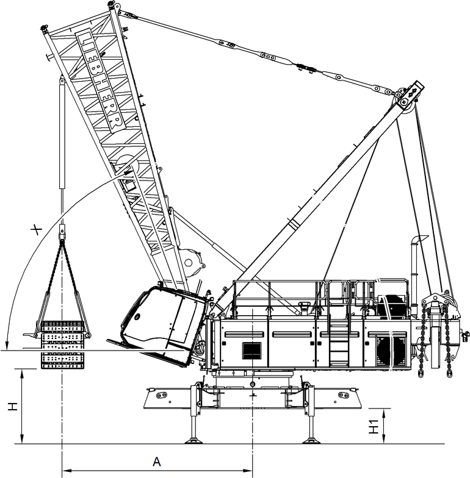

Ersten Raupenträger anschlagen

GEFAHR
Überschreiten der maximalen Ausladung!
Kippen der Maschine.
Sicherstellen, dass maximale Ausladung nicht überschritten wird. |
Mechanische Winkelanzeige am Hauptausleger-Anlenkstück beachten. |
Der Oberwagen kann unter Einhaltung der maximalen Ausladung um 360° gedreht werden.

Fig. 4645: Grenzwerte beim Anschlagen und Anbauen des ersten Raupenträgers
Fig. 4645: Grenzwerte beim Anschlagen und Anbauen des ersten Raupenträgers
Benennung | Wert | |
|---|---|---|
A | Maximale Ausladung | 4600 mm 15.09 ft |
H | Maximale Hubhöhe | 2580 mm 8.46 ft |
H1 | Maximale Abstützhöhe | 974 mm 3.2 ft |
X | Minimaler Winkel des Hauptausleger-Anlenkstücks | 75° |
Grenzwerte beim Anschlagen und Anbauen des ersten Raupenträgers
Mit Raupenträger beladene Transportfahrzeug so nahe wie möglich zur Maschine fahren. |
ACHTUNG
Waagrechte Kabine!
Beschädigung der Kabine.
Kabine vor Anbau des Raupenträgers nach oben neigen. |
Wenn Kabine nach unten geneigt ist: | |
Taste Kabinenneigung erhöhen an rechter, vorderer Schalterleiste drücken und gedrückt halten. | |
Kabine wird nach oben geneigt. |
Rundschlingen-Gehänge 4-strängig mit Kettenverkürzer mit Montagezylinder verbolzen. |
Rundschlingen-Gehänge bei Bedarf mit Kettenverkürzer auf Höhe des Raupenträgers auf Transportfahrzeug einstellen. |

VORSICHT
Bewegliche Klappkonsolen!
Quetschungen der Gliedmaßen.
Keine Gliedmaßen in bewegliche Klappkonsolen bringen. |
Sicherungsfeder 4 entfernen. |
Bolzen 1 entfernen. |
Rundschlinge 2 mit Klappkonsole 3 verbolzen. |
Bolzen 1 mit Sicherungsfeder 4 sichern. |
Vorgang bei allen Klappkonsolen 3 wiederholen. |
Raupenträger vom Transportfahrzeug heben. |
Transportfahrzeug wegfahren. |